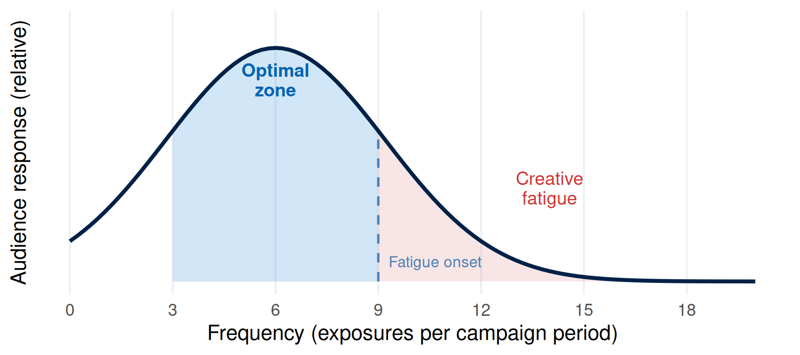
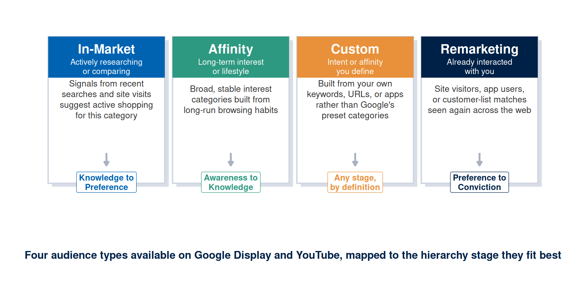
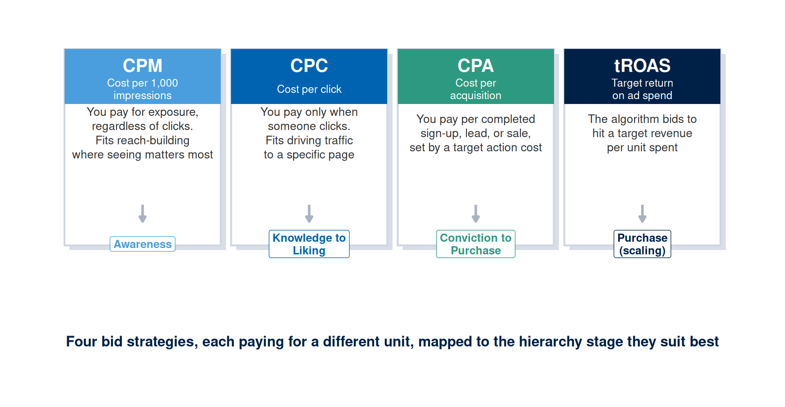
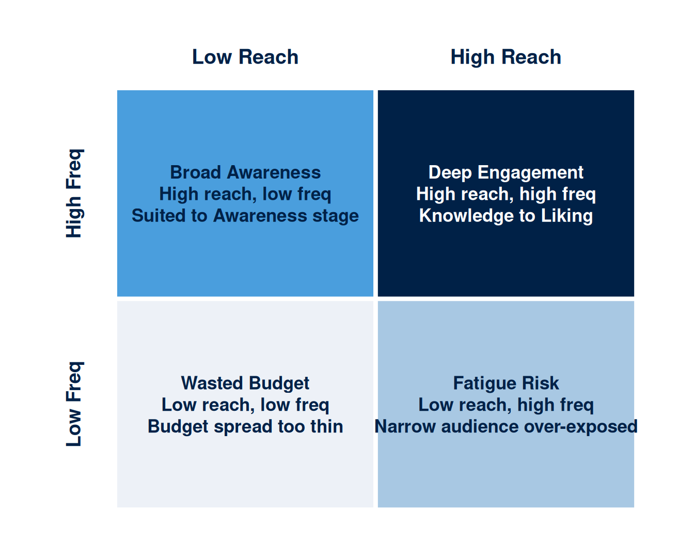
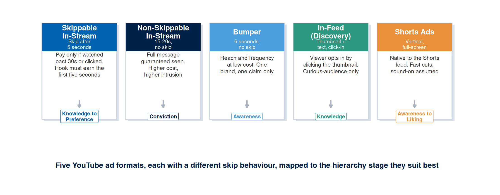
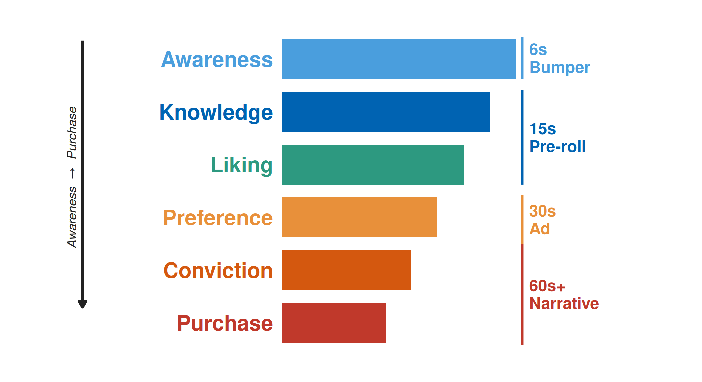

Week 5: Display Advertising and Video Formats
NoteOverview
Last week you built a copybook: message variants tied to your hierarchy stage and processing route, backed by a message test plan. That copybook gives you words worth saying, but it says nothing about who will see them, how often, or in what context, because a campaign’s reach depends on decisions about audience, bid, and format that sit entirely outside the message itself. A campaign with a sharp positioning claim, persuasive copy, and a well-designed visual asset can still fail at scale if the wrong audience receives it, the bid strategy pays for the wrong outcome, or creative fatigue exhausts the audience’s willingness to engage after repeated exposure. This chapter works through the targeting, bidding, and format decisions that determine reach, giving you a theoretical account of how repetition, attention, and media richness shape audience response to digital advertising, a practical vocabulary for evaluating display and video placements, and a set of decision rules for choosing an audience mechanism, a bid strategy, a format, and a frequency standard.
The artefact you produce this week is a creative and placement pack: a structured document that specifies your audience mechanism, bid strategy, format choices, frequency decisions, and creative structure for one display and one video placement. This week’s learning design allocates nine hours to build it: a one-hour lecture, a two-hour tutorial, and six hours of self-directed study.
This Week’s Lecture
Lecture Display Advertising and Video Formats
Discussion
1 Introduction
⏱ 10 min
Week overview, placement-as-strategy brief, and Week 2 canvas plus Week 3 visual asset and Week 4 copybook handover.
Acquisition
2 Theory and Application
⏱ 30 min
Audiences (in-market, affinity, custom, remarketing); bids (CPM, CPC, CPA, tROAS); topics/keywords and negatives; placements and exclusions; YouTube formats; creative and frequency; evaluation metrics, each with a theory-to-decision bridge.
Practice
3 Guided Worked Example
⏱ 15 min
Applying the evidence framework to the Villa College Certificate placement brief.
Assessment
4 Attendance and Exit Check
⏱ 5 min
Attendance, Moodle concept check.
Learning Objectives
After studying this chapter, you should be able to:
- Apply the mere exposure effect to explain how frequency decisions interact with audience attitude formation.
- Use attention economy principles to explain why viewability, placement context, and creative salience affect advertising effectiveness.
- Apply media richness theory to select between display and video formats for different campaign objectives and audience processing states.
- Distinguish between in-market, affinity, custom, and remarketing audiences, and select the audience mechanism that fits a given hierarchy stage.
- Distinguish between CPM, CPC, CPA, and tROAS bid strategies, and select the bid strategy that fits a given campaign objective.
- Apply topic, keyword, and placement targeting, including negative keywords and placement exclusions, to keep a campaign within a defined content context.
- Describe the skip behaviour and structural constraints of skippable in-stream, non-skippable in-stream, bumper, in-feed, and Shorts video ad formats, and explain how each suits a different hierarchy stage.
- Define and apply the concepts of reach, frequency, viewability, and creative fatigue in a campaign planning context.
- Select a primary metric and two diagnostic metrics from CTR, VTR, conversions, and assisted conversions, matched to a campaign’s hierarchy stage.
- Design a placement brief that specifies the audience, bid strategy, format, placement, frequency cap, viewability standard, and outcome metrics for one display and one video placement.
- Apply the evidence framework to placement decisions: classify audience, bid, and format choices as evidence-based, inferred, or assumed.
NoteHow to use this chapter
This chapter assumes you have completed Weeks 2, 3, and 4. Every targeting and format decision this week should be traceable back to your hierarchy stage, your ELM route, your visual asset specification, and your copybook. A media placement that stands apart from those decisions has no strategic rationale. Read the sections below before the lecture and bring your Week 2 canvas, Week 3 visual asset specification, and Week 4 copybook to every session: the tutorial task asks you to produce a placement brief that stays internally consistent with all three documents.
Why Placement Is a Campaign Decision
Media placement is a strategic decision that interacts with every other element of the campaign. Treat it as a distribution task, tacked on once the real decisions are made, and the campaign inherits a mismatch it never chose: the audience mechanism, the bid strategy, and the format each carry an implicit claim about who the campaign is for and what stage they are at: a remarketing audience bid on CPA assumes a level of purchase intent a cold Awareness-stage audience has yet to reach, and a fifteen-second in-stream ad assumes a viewer willing to trade five seconds of attention for a claim the six-second bumper format has no room to make. Picture a Preference-stage message served to a broad affinity audience on a CPM bid, or a Conviction-stage call to action placed past the skip point of a format the viewer never intended to watch to the end: both are placements chosen without reference to the stage they are meant to serve.
The decisions in this chapter build on the Week 2 canvas, the Week 3 visual asset specification, and the Week 4 copybook. The hierarchy stage determines which audience mechanism carries a strong enough signal and which bid strategy matches the objective. The format’s richness must match the communication task the copy and visual assets were built to perform, and the format’s skip behaviour constrains how that task gets delivered. A placement decision made apart from these earlier documents has no strategic rationale behind it: it is platform preference standing in for a decision.
A display or video placement brief must answer three questions before specifying a format. First, what is the audience doing at the moment they will encounter the ad, and how much attention are they likely to be paying? Second, what is the campaign objective at this stage, and which format gives the creative enough time and space to serve that objective? Third, what creative and copy elements from the previous weeks’ work need to be adapted for this format’s technical constraints?
The Attention Economy and Display Advertising
Display advertising exists in an environment where attention is finite and contested. Every second a user spends with any one piece of content is a second withheld from another. This condition, described by Herbert Simon as the attention economy, means that the value of a media placement depends on its ability to earn and hold attention in competition with everything else in the same context. Reach alone is a weaker predictor of that value (Simon, H. A., 1971).
Digital display advertising has evolved through several generations of format. Banner advertising in its earliest forms placed a static image in a fixed location on a page, where it competed with editorial content for a reader’s visual attention. Programmatic display advertising now places ads in real time across networks of sites, targeting audience segments in place of editorial contexts. Video advertising places moving-image content at the start, middle, or end of a video stream, or within a social media feed. Each format places different demands on the audience and offers different creative affordances.
Mere Exposure Effect
The mere exposure effect, originally demonstrated by Zajonc, proposes that repeated exposure to a stimulus increases liking for that stimulus, even in the absence of any conscious recognition of the repetition (Zajonc, R. B., 1968). In advertising contexts, this effect underlies the rationale for frequency: exposing an audience to a brand or campaign message multiple times increases the probability that, when a relevant decision arises, the brand comes to mind with a positive rather than neutral or negative valence.
However, the mere exposure effect reaches a limit. Beyond a certain number of exposures, the audience’s response plateaus and may reverse: repeated exposure to an ad that was initially neutral can produce irritation and avoidance (Schmidt, S. and Eisend, M., 2015). This phenomenon, creative fatigue, is a systematic risk in display and video campaigns. Plan for it before the campaign launches; waiting until it has underperformed is too late to act on.
Three decisions govern the relationship between exposure and response. Reach is the number of unique individuals who see the ad at least once. Maximising reach produces broad awareness but low average frequency; a very wide audience may each see the ad only once, missing the benefit of the repetition effect. Frequency is the average number of times each individual sees the ad within a defined period. Maximising frequency at the expense of reach may over-expose a narrow audience and produce fatigue before the campaign objective is met. Frequency cap is the maximum number of times any individual will be served the ad within a defined period. Setting a frequency cap prevents over-exposure at the individual level while allowing the campaign to run for a longer period.
The appropriate reach-frequency balance depends on the hierarchy stage. Awareness campaigns typically prioritise reach: the goal is to ensure a large proportion of the target segment has had at least one exposure. Knowledge and Liking campaigns benefit from higher average frequency: the audience needs more than one encounter to develop familiarity and positive valence. Conviction and Purchase campaigns may benefit from a low-frequency, high-specificity approach: the audience is already motivated and needs a clear, unobstructed path to the conversion action rather than a reminder.
TipTheory-to-decision bridge
The mere exposure effect states that repeated exposure increases liking up to a threshold, after which fatigue may set in. Specify a frequency cap before the campaign launches, on the strength of that curve rather than a round number picked from convention. State the hypothesis about what level of frequency will produce the desired response for this audience at this hierarchy stage, and build in a mid-campaign check to assess whether fatigue is emerging.
TipInteractive Lab: Campaign Funnel Simulator
Use this simulator to explore how frequency and conversion rate interact across your campaign funnel. Set your ad impressions, click-through rate, and landing page conversion rate. At what point does increasing reach stop improving ROAS? Screenshot your result and include a 100-word interpretation in your Week 5 placement brief.
Tutorial link: Supports Activity 2 (Placement Brief), where you enter your reach and frequency estimates to calculate projected ROAS.
IS link: Feeds into your Week 5 submission: media placement brief with frequency cap and viewability specification.
#| '!! shinylive warning !!': |
#| shinylive does not work in self-contained HTML documents.
#| Please set `embed-resources: false` in your metadata.
#| standalone: true
#| viewerHeight: 720
#| components: [viewer]
library(shiny)
library(bslib)
ui <- page_sidebar(
title = "Campaign Funnel Simulator",
sidebar = sidebar(
width = 290,
sliderInput("impressions", "Ad impressions",
min = 1000, max = 500000, value = 50000, step = 1000, sep = ","),
sliderInput("ctr", "Click-through rate (%)",
min = 0.1, max = 20, value = 2.5, step = 0.1),
sliderInput("cvr_lp", "Landing page conversion (%)",
min = 0.1, max = 30, value = 4.0, step = 0.1),
sliderInput("cvr_l2c", "Lead to customer (%)",
min = 1, max = 80, value = 20, step = 1),
sliderInput("aov", "Average order value (MVR)",
min = 100, max = 20000, value = 1500, step = 100, sep = ","),
sliderInput("cost", "Campaign cost (MVR)",
min = 1000, max = 200000, value = 20000, step = 1000, sep = ","),
hr(),
tags$small("All values in Maldivian Rufiyaa (MVR).")
),
layout_column_wrap(
width = "160px",
value_box(title = "Clicks", value = textOutput("clicks"), theme = "primary"),
value_box(title = "Leads", value = textOutput("leads"), theme = "info"),
value_box(title = "Customers", value = textOutput("customers"), theme = "success"),
value_box(title = "ROAS", value = textOutput("roas"), theme = "warning")
),
card(
card_header("Funnel Drop-Off"),
plotOutput("funnel_plot", height = "260px")
),
card(
card_header("Benchmark Guide"),
tableOutput("bench_table")
)
)
server <- function(input, output, session) {
vals <- reactive({
clicks <- round(input$impressions * (input$ctr / 100))
leads <- round(clicks * (input$cvr_lp / 100))
customers <- round(leads * (input$cvr_l2c / 100))
revenue <- customers * input$aov
roas <- if (input$cost > 0) revenue / input$cost else 0
list(clicks = clicks, leads = leads, customers = customers,
revenue = revenue, roas = roas)
})
fmt <- function(x) formatC(round(x), format = "f", digits = 0, big.mark = ",")
output$clicks <- renderText(fmt(vals()$clicks))
output$leads <- renderText(fmt(vals()$leads))
output$customers <- renderText(fmt(vals()$customers))
output$roas <- renderText(sprintf("%.2fx", vals()$roas))
output$funnel_plot <- renderPlot({
v <- vals()
stages <- c("Impressions", "Clicks", "Leads", "Customers")
counts <- c(input$impressions, v$clicks, v$leads, v$customers)
colours <- c("#003f88", "#0063b2", "#4a9edd", "#7dc4f4")
par(mar = c(4, 9, 1, 2), bg = "white")
bp <- barplot(rev(counts), horiz = TRUE, names.arg = rev(stages),
col = rev(colours), border = NA, las = 1, xlab = "Count")
text(rev(counts), bp, labels = fmt(rev(counts)),
pos = 4, cex = 0.82, col = "#333333")
})
output$bench_table <- renderTable({
v <- vals()
data.frame(
Metric = c("CTR", "Landing page CVR", "Lead-to-customer", "ROAS"),
`Your value` = c(paste0(input$ctr, "%"), paste0(input$cvr_lp, "%"),
paste0(input$cvr_l2c, "%"), sprintf("%.2fx", v$roas)),
`Typical range` = c("1-5%", "2-8%", "10-30%", "2x-10x"),
`Note` = c(
ifelse(input$ctr < 1, "Below average", ifelse(input$ctr > 5, "Strong", "Normal")),
ifelse(input$cvr_lp < 2, "Review page", ifelse(input$cvr_lp > 8, "Strong", "Normal")),
ifelse(input$cvr_l2c < 10, "Review leads", ifelse(input$cvr_l2c > 30, "Strong", "Normal")),
ifelse(v$roas < 1, "Losing money", ifelse(v$roas > 4, "Profitable", "Marginal"))
),
check.names = FALSE
)
}, striped = TRUE, spacing = "s")
}
shinyApp(ui, server)Media Richness Theory
Media richness theory, developed by Daft and Lengel, proposes that communication media differ in their capacity to convey information, and that richer media are more effective for ambiguous or complex messages (Daft, R. L. and Lengel, R. H., 1986). Richer media convey multiple cues simultaneously (visual, auditory, motion, timing), support rapid feedback, and allow personalisation. Leaner media convey fewer simultaneous cues and are more appropriate for simple, unambiguous messages.
Applied to digital advertising formats, this framework predicts that video is a richer medium than static display: it conveys motion, timing, and auditory information, and communicates emotional narratives beyond a static image’s reach. For messages at the Liking and Preference stages, where the campaign is trying to create emotional association or build preference through storytelling, video is more likely to achieve the objective than a static banner at equivalent reach and cost. For messages at the Awareness stage, where the goal is simply to make the audience aware that an offering exists, a static display format may be sufficient and more cost-efficient.
Format selection should be driven by the richness required to achieve the communication objective at the hierarchy stage, over which format is more engaging in the abstract. “Video performs better” raises three questions: better at what, for whom, at which stage? A format decision that leaves those three questions unanswered rests on preference alone.
TipTheory-to-decision bridge
Media richness theory states that richer media should be matched to more complex or emotionally nuanced messages. State what the format needs to communicate before choosing it, then ask whether the format’s richness level is sufficient for that communication task. A six-second pre-roll video can communicate a brand name and a single claim. A thirty-second narrative video can communicate a transformation, a testimonial, and an emotional appeal. Both are video, yet they remain unequal media.
Audience Targeting on Display and YouTube
A placement brief predicts who will see the ad; where it appears is the secondary question. Google’s display and YouTube inventory offers four audience-targeting mechanisms, each built from a different signal and suited to a different point in the hierarchy of effects.
In-market audiences are built from recent behavioural signals: searches, comparison-shopping activity, and site visits that indicate a user is actively researching or evaluating a purchase in a defined category. Because the signal is recency-weighted, in-market audiences suit the Knowledge-to-Preference transition, where the campaign wants to reach people already moving toward a decision. Affinity audiences are built from long-run browsing patterns and describe a stable lifestyle or interest category, a signal well suited to broad Awareness-to-Knowledge reach even though it carries no marker of active purchase intent. Custom audiences are the campaign team’s own construction, built from its keywords, URLs, or app lists in place of Google’s preset categories, and can therefore be built to fit any hierarchy stage the team can define with precision. Remarketing audiences are built from people who have already visited the website, used the app, or matched a customer list, and are the most qualified audience available: they suit the Preference-to-Conviction stage, where the objective is to bring an already-interested visitor back to complete a decision.
Figure 2 summarises the four audience types and the hierarchy stage each fits best.

TipTheory-to-decision bridge
Choose audience mechanism and hierarchy stage together. Picking the audience type first and inferring the stage afterward reverses the logic: state the hierarchy stage from the Week 2 canvas, then select the audience mechanism whose signal strength matches that stage: a remarketing audience wasted on a pure Awareness objective reaches too few people; an affinity audience serving a Conviction-stage message reaches too many of the wrong people.
Personalisation theory offers a complementary account of why remarketing and custom audiences perform differently from broad affinity reach. The theory holds that a message perceived as relevant to the individual receiving it is processed as useful information, while the identical message perceived as generic is more readily processed as intrusive advertising clutter (Tam, K. Y. and Ho, S. Y., 2005). A remarketing ad that references a product the viewer has already browsed draws on a real behavioural signal and is read as relevant; the same ad served to a cold affinity audience carries no such signal and competes for attention on equal footing with every other unrelated ad in the feed. Because relevance offsets some of the irritation that repetition alone would otherwise produce, a personalised, remarketing-driven placement can sustain a higher frequency cap before triggering the fatigue response described earlier in this chapter.
Bid Strategies
The bid strategy determines what the campaign pays for and, indirectly, what behaviour the platform’s delivery algorithm optimises toward. Cost per mille (CPM) charges for every one thousand impressions served regardless of clicks, and suits Awareness objectives where the goal is exposure itself. Cost per click (CPC) charges only when a user clicks the ad, aligning spend with traffic generation and suiting the Knowledge-to-Liking stages, where the campaign wants engaged visitors rather than passive views. Cost per acquisition (CPA) charges per completed action, such as a sign-up, a lead form, or a sale, at a target cost the campaign sets, and suits the Conviction-to-Purchase stages, where a defined conversion event is the outcome that matters. Target return on ad spend (tROAS) lets the platform’s algorithm bid to hit a target revenue per unit of spend, and suits the scaling phase of a Purchase-stage campaign with enough conversion history for the algorithm to optimise against.
Figure 3 summarises the four bid strategies and the hierarchy stage each is built for.

TipTheory-to-decision bridge
The bid strategy is a statement of what the campaign is willing to pay for. Leaving it at its default treats a strategic choice as a technical afterthought: a CPM bid on a Conviction-stage campaign pays for impressions when the objective needs conversions, while a CPA bid on an Awareness-stage campaign starves the campaign of the reach it needs before enough conversion data exists to optimise against. Derive the bid strategy from the hierarchy stage; habit is a poor substitute.
Contextual and Placement Targeting: Topics, Keywords, and Exclusions
Audience and bid strategy determine who the campaign targets and what it pays for; contextual targeting determines where the ad is permitted to appear. Topic targeting places the ad against a defined content category (for example, “education” or “travel”), while keyword targeting places the ad against pages or videos whose content matches a defined keyword list. Both approaches place the creative in a context relevant to the campaign message, a check that audience signals alone leave to chance.
This chapter treats keyword selection as a placement decision, ahead of the full keyword research methodology that arrives in Week 6: it assumes you can produce a working list of five to eight relevant terms without a formal research method yet. Two quick, free steps get you a defensible starting list before then. First, start from your Week 2 canvas positioning claim and your Week 4 copybook, and list the terms your own audience description already uses: the category name, the specific problem, and the outcome your audience searches for. Second, type your two or three most obvious terms into Google’s search bar without pressing enter, and record the autocomplete suggestions: these reflect real queries other people have typed, a stronger source than terms you assume they use. This quick method is intentionally minimal.
NoteWhere keyword research is covered properly
Full keyword research methodology, including search volume estimation, competition scoring, long-tail query patterns, and search intent classification, is covered in Week 6 (SEO), using the free tools Ubersuggest and AnswerThePublic. Week 7 (PPC) then covers keyword match types in depth. The quick method above is enough to complete this week’s placement brief; treat it as a placeholder your Week 6 and Week 7 work will refine, rather than a finished skill.
Negative keywords and placement exclusions are the other half of contextual targeting, and the half most often left incomplete in a first-draft brief. A negative keyword list prevents the ad from appearing against content that matches an unwanted term: a certificate-programme campaign should exclude “free,” “scholarship only,” and “job vacancy” if those terms attract clicks from users unlikely to enrol. A placement exclusion list removes specific sites, apps, or channels from eligibility, typically because they carry brand-safety risk or have shown poor engagement in a prior campaign. Reviewing the automatically generated placement report after the first week of delivery, and adding exclusions for any placement showing spend without engagement, is standard practice. Treat it as one.
TipTheory-to-decision bridge
A placement brief without an exclusion list is a brief that has yet to decide where the ad should never appear. Specify at least three negative keywords and a rule for reviewing the placement report, before the campaign launches rather than after the budget has been spent on the wrong context.
Display Ad Formats: Structure and Constraints
Standard display advertising formats are defined by the Interactive Advertising Bureau (IAB). The most commonly used formats across digital campaigns are the leaderboard (728 x 90 pixels), the medium rectangle (300 x 250 pixels), and the wide skyscraper (160 x 600 pixels). Mobile-first formats include the banner (320 x 50 pixels) and the large mobile banner (320 x 100 pixels). Each format is served in a defined position on a web page or app, and each imposes specific constraints on the creative.
Viewability is the standard measure of whether an ad was actually seen: an ad is classified as viewable if at least 50 per cent of its pixels are visible on screen for at least one second (display) or two seconds (video). Ads served below the fold, loaded late, or placed in positions where users rarely scroll have lower viewability rates. A campaign reporting impressions without reporting viewability is presenting a number that may overstate actual exposure. The viewability rate should be specified as a minimum threshold in the placement brief.
The creative constraints of display advertising impose a discipline that benefits the campaign. A 300 x 250 pixel rectangle with a file size limit of 150 KB carries little beyond a single idea: a visual mark, one claim, and a call to action. This constraint forces the campaign team to identify the single most important message for the audience at the current hierarchy stage. Ask a team to name that one thing in a single sentence, without debate, and any strategic work still outstanding from Weeks 2 and 4 shows up immediately.
TipTheory-to-decision bridge
Display ad format constraints force clarity about the primary message: before designing the display asset, write the single sentence it must communicate.

Video Ad Formats: Structure, Length, and the Six-Second Rule
YouTube offers five distinct ad formats, each defined by a different skip behaviour and a different demand on the viewer’s attention. Skippable in-stream ads play before, during, or after a video and let the viewer skip after five seconds; the campaign pays only if the viewer watches past thirty seconds or clicks, so the first five seconds must earn the remaining watch time. Non-skippable in-stream ads, capped at fifteen to twenty seconds, guarantee the full message is seen but carry a higher cost per impression and a higher risk of viewer intrusion. Bumper ads are non-skippable six-second units bought on a CPM basis, built for reach and frequency rather than argument. In-feed (Discovery) ads appear as a thumbnail and short text within the YouTube feed or search results, and the viewer opts in by clicking; this format reaches only a self-selected, already-curious audience. Shorts ads appear natively within the vertical, full-screen Shorts feed and assume sound-on viewing and fast-cut editing conventions distinct from horizontal in-stream video.
Figure 5 maps the five formats to the hierarchy stage each suits best.

TipTheory-to-decision bridge
Skip behaviour is a constraint on the creative, rather than a technical detail to select after the creative is built. A skippable in-stream ad must earn its first five seconds or lose the viewer before the message lands; a bumper ad has no skip risk but only six seconds regardless. Choose the format from the message the hierarchy stage requires, then write the creative to the skip behaviour that format imposes.
NoteFree Tool: YouTube Ads Leaderboard and Google Ads Transparency Center
Reading a format’s specification tells you what is technically possible; watching a real ad in that format tells you what earning attention within it actually looks like. Two free, public, no-sign-up resources let you study real examples before you build your own. The YouTube Ads Leaderboard ranks the highest-performing ads by watch time and audience retention each month, organised by format including a dedicated bumper ads edition. The Google Ads Transparency Center, the same tool used in Week 3, shows any advertiser’s currently running creative, including video, across every format. Before your tutorial, find one real example of a skippable in-stream ad and one bumper ad, and note where the claim lands relative to the skip point in each.
Video advertising is also served across three delivery contexts within these formats: pre-roll (before video content begins), mid-roll (within video content), and in-feed (as a standalone video unit in a scroll-based feed). Each context determines how much voluntary attention the viewer is likely to give and therefore how much of the creative they will watch before scrolling or skipping.
The six-second bumper ad is the briefest video unit available on major platforms. Its function is reach and frequency: it carries a brand and a single claim, made visually memorable across a broad audience at a low cost per impression. A complex argument has no room in six seconds. The discipline of the six-second format is extreme: every frame must carry meaning, and the brand and claim must be introduced in the first two seconds, since some viewers will leave before six seconds elapse.
NoteWatch: a real bumper ad from the YouTube Ads Leaderboard
Samsung’s pre-book bumper ad for the Galaxy S8+, drawn from YouTube’s official Bumper Ads Leaderboard, uses all six seconds for one claim and one call to action, with the brand mark visible from the first frame.
The fifteen-second ad allows a brief narrative arc: a problem stated in three seconds, a solution presented in six seconds, an evidence cue in three seconds, and a call to action in three seconds. This format suits the Knowledge and Liking stages of the hierarchy, where the audience needs to understand what the offering does and why it is worth their attention. The transition between sections must be sharp: a fifteen-second ad that spends the first five seconds on brand atmosphere before naming the claim leaves early-leaving viewers without the claim.
The thirty-second ad and longer formats allow full narrative development: an emotional opening, a clearly stated problem, a demonstration of the solution, a testimonial or authority cue, and a call to action with time for the viewer to register it. These formats suit the Preference and Conviction stages, where the audience needs to move from general interest to active evaluation. They carry expense and risk: a viewer who stops watching at ten seconds has seen the emotional opening while missing the argument, an impression gap that can mislead.
NoteWatch: a real longer-format in-stream ad from the YouTube Ads Leaderboard
GoPro’s “We Are Women” spot, also drawn from the official YouTube Ads Leaderboard, spends its opening seconds on emotional footage before the brand and message resolve, a structure only a longer skippable in-stream format can support.
Table 1 summarises the structural elements appropriate for each video length and their relationship to the hierarchy of effects.
| Length | Hierarchy Stage | Structural Elements | Primary Metric |
|---|---|---|---|
| 6 seconds (bumper) | Awareness | Brand mark + one claim + visual hook; brand visible by second 2 | Reach and brand recall |
| 15 seconds | Knowledge to Liking | Problem (0-3s) + solution/claim (3-9s) + evidence cue (9-12s) + CTA (12-15s) | View-through rate and click-through rate |
| 30 seconds | Preference to Conviction | Emotional hook (0-5s) + problem (5-10s) + solution (10-20s) + proof (20-26s) + CTA (26-30s) | Completed view rate and engagement rate |
| 60+ seconds | Conviction to Purchase | Narrative arc: character, problem, transformation, evidence, testimonial, CTA; risk of early drop-off | Conversion rate and cost per acquisition |

Creative Fatigue: Identification and Management
Creative fatigue occurs when an audience’s repeated exposure to the same creative asset produces declining response rates: click-through rates fall, skip rates on video increase, or engagement rates drop below the campaign’s expected baseline. Fatigue signals that the creative asset has exhausted its ability to earn attention from people who have already seen it several times. It says nothing about whether the audience has rejected the offering itself.
Managing creative fatigue requires planning before the campaign launches. The placement brief should specify the expected fatigue threshold based on the audience size, the campaign duration, and the daily frequency. If the campaign is expected to run for four weeks at an average frequency of three exposures per week, the creative asset will have been seen approximately twelve times by the average audience member by the end of the campaign. Most display and video assets show measurable fatigue at frequencies between five and ten exposures, depending on the audience’s motivation level and the creative quality.
Three approaches to managing fatigue are available within most campaign budgets. The first is creative rotation: producing two or three versions of the primary asset, each making the same strategic claim but varying the hook, the visual arrangement, or the format length, and rotating them throughout the campaign. The second is frequency capping: setting a maximum number of exposures per individual per week so that no single audience member sees the same creative more than a specified number of times. The third is a scheduled creative refresh: planning a new asset for a defined point in the campaign schedule, such as at the halfway point or at the transition between hierarchy stages.
TipTheory-to-decision bridge
Creative fatigue theory states that repeated exposure to the same creative will eventually produce declining response. Write the frequency cap and the creative rotation plan into the placement brief before the campaign launches, ahead of the data that would otherwise show declining performance.
Evaluation Metrics: CTR, VTR, Conversions, and Assisted Conversions
A placement brief needs a primary metric and a small set of diagnostic metrics, selected before launch, so a mid-campaign result can be read against a standard rather than argued about after the fact. Four metrics cover most display and video placement decisions, and each answers a different question.
Click-through rate (CTR) is the proportion of impressions that produce a click, and it answers whether the creative and targeting combination earns enough interest to move a viewer off the platform. CTR is the primary metric for Knowledge-to-Preference stage display placements, where the objective is qualified traffic to a landing page.
View-through rate (VTR) is the proportion of a video ad watched to a defined completion point, commonly 25, 50, 75, and 100 per cent, and it answers whether the video holds attention long enough to deliver its claim. VTR is the primary metric for awareness-building video placements, where a completed view stands in for message delivery in the absence of a click.
Conversions are completed actions the campaign defines as valuable: a lead form, a sign-up, or a sale. Conversions answer whether the placement produces the actual business outcome; a click or a view is only an intermediate signal by comparison. They are the primary metric for Conviction-to-Purchase stage placements.
Assisted conversions count a placement’s contribution to a conversion completed through a different channel or a later visit, rather than only conversions attributed directly to the last click. A placement with a low direct conversion rate can still carry real value if it assists conversions attributed to search or direct traffic later in the same user’s journey; ignoring assisted conversions can lead a campaign team to cut a placement that is doing real work earlier in the funnel.
Table 2 maps each metric to the hierarchy stage it evaluates best, extending the reach-frequency planning already covered in this chapter.
| Metric | Hierarchy Stage | What It Answers |
|---|---|---|
| Viewability | Any stage (a precondition for every other metric) | Was the impression physically seen, at the IAB threshold |
| Click-through rate (CTR) | Knowledge to Preference | Did the creative and targeting earn a click to the landing page |
| View-through rate (VTR) | Awareness to Knowledge | Did the video hold attention to a defined completion point |
| Conversions | Conviction to Purchase | Did the placement produce the defined business outcome directly |
| Assisted conversions | Any stage (cross-channel contribution) | Did the placement contribute to a conversion completed elsewhere |
TipTheory-to-decision bridge
A single primary metric, chosen before launch, keeps a mid-campaign result readable against a standard. Name one primary metric and two diagnostic metrics for each placement, matched to its hierarchy stage, and check assisted conversions before cutting a placement on direct conversions alone.
Worked Examples: Placement Briefs Across Three Campaign Categories
Placement decisions follow the same sequence regardless of campaign category: an audience mechanism and a bid strategy drawn from the hierarchy stage, a format chosen for the richness and skip behaviour the message needs, and a frequency cap, viewability threshold, and evaluation metric set before launch. The three condensed examples below apply that sequence to a certificate programme, a community marathon, and a guesthouse, three offerings with almost nothing in common, so the framework reads as genuinely general-purpose. Hold your own campaign next to whichever example sits closest to it, and use the same level of specificity in your own decision record.
NoteWorked example: the Villa College Certificate campaign
Stage and route: Knowledge-to-Preference, central. The Week 4 copybook’s loss-frame hook (“a qualification alone leaves you short”) carries directly into the in-stream ad below.
Audience and bid: In-market audience for “professional certification courses,” CPC bid, because the objective is qualified traffic to the programme page rather than raw impressions.
Formats: A fifteen-second skippable in-stream ad carrying the hook and a named graduate testimonial, plus a 300 x 250 display unit retargeted to programme-page visitors on a CPA bid.
Frequency and viewability: Cap of three per week; viewability threshold 70 per cent.
Metrics: Primary: CTR from the in-stream ad’s companion banner. Diagnostic: display conversions and assisted conversions from the retargeting placement.
NoteWorked example: a community marathon
Stage and route: Awareness, peripheral. Most of the audience has yet to consider entering a race at all.
Audience and bid: Affinity audience for running and fitness interests, CPM bid, because the objective is broad, low-cost reach rather than a qualified click.
Formats: A six-second bumper ad (last year’s finisher count as the visual hook, one claim, the training-plan URL) plus a 1200 x 628 static in-feed unit repeating the same claim.
Frequency and viewability: Cap of two bumper exposures per week; viewability threshold set at the IAB minimum of 50 per cent, since reach matters more than depth at this stage.
Metrics: Primary: VTR on the bumper. Diagnostic: reach against the target segment size, and sign-ups for the free training plan as an assisted conversion signal.
NoteWorked example: a guesthouse in a hospitality market crowded with resorts
Stage and route: Preference, central. The audience is actively comparing named alternatives.
Audience and bid: Custom audience built from travel comparison-site URLs and resort-related search terms, CPA bid targeting a “compare rooms” click as the defined action.
Formats: A 1200 x 628 display unit on travel comparison sites (reef-access photo, verified review score, “Compare our rooms and rates” CTA) plus a thirty-second in-stream ad served to travellers already watching travel-planning content.
Frequency and viewability: Cap of three per week; viewability threshold 70 per cent, since a comparison-stage audience needs the ad genuinely seen rather than scrolled past.
Metrics: Primary: CTR to the rooms and rates page. Diagnostic: assisted conversions from travellers who book later through a direct search.
Table 3 lines up all three examples so you can see how the same decision sequence produces three different placement briefs once the stage and audience change.
| Decision | Certificate Programme | Community Marathon | Guesthouse |
|---|---|---|---|
| Hierarchy stage / route | Knowledge-to-Preference / central | Awareness / peripheral | Preference / central |
| Audience mechanism | In-market | Affinity | Custom |
| Bid strategy | CPC | CPM | CPA |
| Primary format | 15s skippable in-stream | 6s bumper | 30s in-stream |
| Frequency cap | 3 per week | 2 per week | 3 per week |
| Primary metric | CTR | VTR | CTR |
Applying the Evidence Framework to Placement Decisions
Placement decisions are predictions about audience behaviour: that this audience, in this context, at this frequency, will respond to this creative with the desired action. Those predictions can be evidence-based, inferred, or assumed.
Evidence-based placement decisions are supported by documented benchmark data: platform-published performance data for similar campaign categories, third-party research on viewability rates by placement type, or documented results from a prior campaign with the same audience. Inferred placement decisions are based on reasonable extrapolation from documented evidence: “platform X shows higher viewability rates for in-feed placements than for sidebar placements, so we predict this campaign will perform better in-feed.” Assumed placement decisions are based on convention or preference without documented support: “everyone uses YouTube, so we should too.”
The standard calls for every decision to be documented, justified, and internally consistent with the canvas and the copybook. Primary research strengthens a decision where it exists; a well-labelled assumption satisfies the standard when it does. An assumed placement decision should be labelled [ASSUMPTION] with the evidence that would be needed to confirm or revise it.
Table 4 applies the evidence framework to the nine core placement decisions in the weekly artefact.
| Placement Decision | Evidence basis | Assumption (if no evidence) |
|---|---|---|
| Audience mechanism (in-market, affinity, custom, remarketing) | Hierarchy stage from Week 2 canvas matched to the audience mechanism whose signal strength fits that stage | Audience mechanism selected by default setting rather than matched to the hierarchy stage |
| Bid strategy (CPM, CPC, CPA, tROAS) | Campaign objective and available conversion history matched to the bid strategy built for that objective | Bid strategy left at platform default without reference to the campaign objective |
| Topics, keywords, and exclusions | Prior placement report data; category-relevant negative keyword lists from comparable campaigns | No negative keyword list or exclusion review process defined before launch |
| Format selection (display, video, length) | Hierarchy stage and ELM route from Week 2 canvas; media richness theory applied to communication objective | Format selected because the team is familiar with it or because it is the most common format in the category |
| Platform and placement type | Documented platform audience data for target segment; platform-reported viewability benchmarks | Platform selected because it has the largest registered user base; no segment-specific data available |
| Reach and frequency targets | Target segment size estimate; hierarchy stage model (Awareness prioritises reach; Conviction prioritises frequency) | Reach and frequency targets set from budget rather than from a documented reach model |
| Frequency cap | Published research on fatigue thresholds for the format; campaign budget and duration constraints | Frequency cap set from convention (e.g., three per week) without a documented fatigue threshold |
| Viewability standard | IAB standard (50% pixels visible for 1 second); platform benchmark data; placement type research | Viewability threshold left unspecified; any placement accepted regardless of viewability rate |
| Primary and diagnostic metrics (CTR, VTR, conversions, assisted conversions) | Hierarchy stage matched to the metric it evaluates (CTR: Knowledge to Preference; VTR: Awareness; conversions: Conviction to Purchase) | A single metric (usually clicks) tracked regardless of hierarchy stage, with no diagnostic metric or assisted-conversion check |